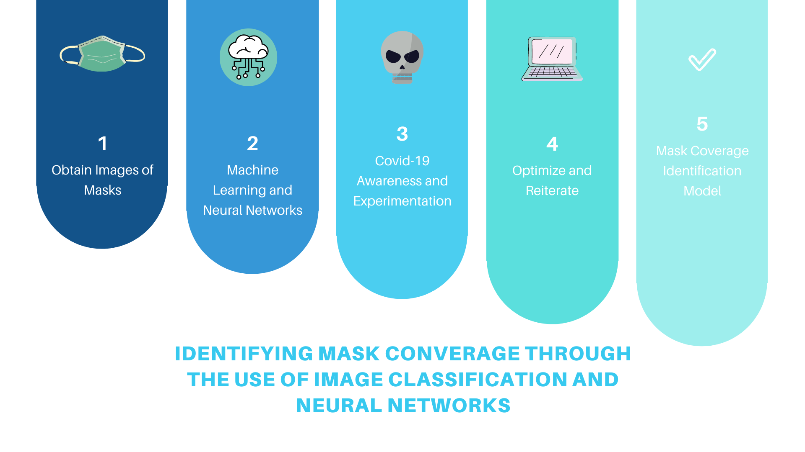

Nina Chen, Sabrina Chua, Siyu Li, Yuhe Chen Fall 2020 CS 4641 Machine Learning: Class Project Georgia Tech
Project Proposal
Summary Figure

Introduction
Our objective is to develop an image classification model to detect if an
individual in a picture is wearing a mask through the use of convolutional
neural networks. In order to perform this, we plan on using feature extraction
in combination with other techniques, such as binary classification.
Specifically for feature extraction, we plan on extracting a minimal set of
features, in this case, masks, from multiple images that contain high
amounts of object or scene information from low-level image pixel values.
In doing so, we will be able to capture the difference among the object
categories involved. Our baseline algorithm will have input images of
people wearing masks, classified as 1, and people not wearing masks,
classified as 0.
Currently, there is no smart way of monitoring continuous mask wearing
in public spaces. Wearing masks is only monitored upon entrance into
certain facilities by human, phone, or tablet. Motorola Solutions and
other Artificial Intelligence startup companies are in the process of
developing face mask recognition surveillance softwares for airlines and
cities.
Methods
Our approach monitors mask wearing throughout a continuous time frame,
and does not require people to stop for seconds to verify on a certain
device that they are wearing masks. It will be able to be implemented on
wide scale surveillance systems, including schools and hospitals.
For this project, in terms of the risks, it could be hard to identify
masks including masks that are not single colored or even have features
of faces printed on them. The quality of the image would need to be easy
to see to better match the masks.
In terms of the cost, it will cost a large amount of image space and data
processing, but otherwise, the pictures should be free-to-use.
We ideally see ourselves spending the next two months of our project
gathering data and testing our multiple different experimental methods.
At the end, we hope to obtain a feasible model that can be readily
utilized.
For our algorithm, our dataset will contain Google images and another
Kaggle dataset of people with and without masks. We are planning on
using PCA and filters for convolutional neural networks. Specifically
for unsupervised techniques, we will be using PCA in order to find patterns
and regularities.
We will then conduct deep learning techniques and object/feature detection
through YOLOv3 with Darknet-53, a neural network framework, following
convolutional layers. By taking images as input, and passing it through
a series of neural networks, we hope to obtain a vector of bounding boxes
and class predictions as output. To assist us in doing this, CVAT will be
used in order to label masks to allow us to eventually export our result
into a YOLOv3 format. The GPU used to conduct and contain this would be
Google Colab. Ideally, once we are able to process the images effectively
to detect the masks, we would be able to take screenshots in a video to
detect continuously.
Using binary classification, we will detect the number of people with 0
for without a mask and 1 with a mask. Then we will count them to output
the two corresponding numbers to identify mask coverage.
Discussion
As of 2020, the COVID-19 pandemic has seen a tremendous impact on
individuals worldwide. By developing a model that can successfully
identify if individuals are wearing masks, we will be able to assist
in minimizing the spread of the virus. Information obtained from this
model can be used in areas, such as research and government.
For instance, if the CDC wanted to understand the spread of the
virus better, they would need to know how well it is being
contained-- our research could help shed light into this.
In order to check for success in the mid-term, we would like to have a
working model that contains the initial stages of image classification.
By the final stage, we want to be able to implement the model and have
it output accurate information.
Midterm Report
Overview
To briefly recap our project, our objective is to develop an image classification model to detect if an individual in a picture is wearing a mask through the use of convolutional neural networks in YOLOv3 and Darknet. In order to perform this, we plan on using feature extraction in combination with other techniques, such as Principal Component Analysis (PCA). Since this is a classification problem, we decided to use binary classification as we are only predicting one of two classes. The features that we will be extracting are people with masks and people without masks so that we can derive a count of people with masks out of the total people. In our dataset, we may have a few outliers such as people wearing masks that have mouths imprinted or people wearing clear masks. These represent the edge cases where if the model would be able to accurately identify these cases, then this would indicate the accuracy and precision are high.
Methods Employed
DATA COLLECTION AND PREPROCESSING
To gather our data, we used Google Images and searched using various keywords, including “masks” and “people”. We then used an image downloader extension (Imageye) to extract all of the images at once. Once we finished compiling this, we uploaded the data onto Github, separated, and then cleaned the data into four folders: all compiled raw files, people with masks, people without masks, and groups of people with both masks and no masks. We created a large dataset (approximately 1000 images per folder) as more situations in the training set takes into account that the model may encounter, the better its performance will be. For the cleaning portion, we specifically made sure that all of the images contained in the folders were accurate so that it would not hinder model results. For instance, the people with masks folder did not contain any images of people without masks. The resulting ratio of the amount of images with people with face masks to people without face masks is approximately equal (the approximate ratio is 47:53). Following this, we uploaded the cleaned dataset from Github to Kaggle to allow us to easily import the dataset into Google Colab (Figure 2).
FIGURE 2 HERE
In terms of color, the team decided to normalize RGB color parameters to between 0 and 1 (one result shown in Figure 3). We decided to do this because when training CNN, we plan on multiplying weights and adding biases to the initial inputs in order to cause activations that we will then back-propogate with the gradients to train the model. Therefore, the parameters need to be on the same scale.
Rosebrock, Adrian. “COVID-19: Face Mask Detector with OpenCV, Keras/TensorFlow, and Deep Learning.” PyImageSearch, 4 May 2020, www.pyimagesearch.com/2020/05/04/covid-19-face-mask-detector-with-opencv-keras-tensorflow-and-deep-learning/.
Xin, M., Wang, Y. Research on image classification model based on deep convolution neural network. J Image Video Proc. 2019, 40 (2019). https://doi.org/10.1186/s13640-019-0417-8